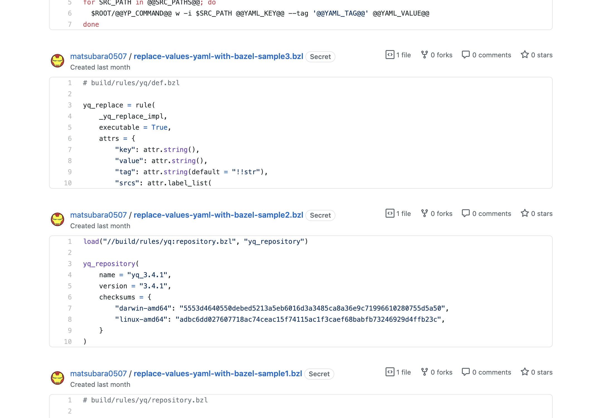

MarkdownをMediumへポストするときにコードブロックをGistのリンクにする
「Markdownで書いたテキストをMediumへポストする(mdium)」で作った Markdown で書いたテキストを Medium へポストするツールですが，ちょくちょく改良を続けてます． 今回は Pandoc を利用して、コードブロックを Gist のリンクに置き換える機能を追加したので，そのことについてのメモ書きです．
Medium のシンタックスハイライト
Medium は普通にコードブロックを記述するとシンタックハイライトされずダサい：
これをなんとかする方法の一つに Gist のリンクを貼って埋め込みにするというのがある：
ただし，一つの Gist に一つのファイルを設定しないといけないのでコスパが最悪で，1つの記事に対してこんな感じに大量の Gist を作る必要がある：

最近はその Gist を使った方法をとっているが，いちいち Gist に手で置き換えるのはめんどいよね． ってことで，自作ツールの mdium が自動でやってくれるようにした．
作る
作業 PR はこれです：
Gist を作成する API
GitHub API には Gist を作成するものがある． しかし，私がよく使う Haskell の GitHub クライアントには Gist を作成する関数が作られてなかった． ので，作成してとりあえず PR を出した：
実は（リファレンスからは分かりにくい？）注意点があって：
filesは{"hoge.txt": {"content": "abc"}}って感じのJSONオブジェクトdescriptionパラメーターやfilesのcontentはnullを渡せないpublicをnullにした場合レスポンスのpublicもnullになる
aeson で Maybe を使ってオプショナルなパラメーターを表現した場合は強制的に null が渡される． そのため， が，レビューで次のようにやればいいよって返ってきた：description はオプショナルなパラメーターだが型を Text にした
instance ToJSON NewGist where
toJSON NewGist { ... } = object $ filter notNull
[ "description" .= newGistDescription
, "files" .= newGistFiles
, "public" .= newGistPublic
]
where
notNull (_, Null) = False
notNull (_, _) = Trueなるほど，レビュー感謝． で，public は，すでにある Gist 型（レスポンスに使いたい）の public が Maybe Bool ではなく Bool なので (3) の挙動が困る． そのため，public パラメーターの型も Bool にしたが，description 同様に filter notNull 効かせたので普通に Maybe Bool で良くなった． ちなみに，デフォルトは false．
Pandoc で書き換える
少しオーバースペックのような気がするが，Pandoc を利用して Markdown をパースする：
customizeContent :: Text -> RIO Env Text
customizeContent content = liftIO . Pandoc.runIOorExplode $ do
p0 <- Pandoc.readCommonMark Pandoc.def content
Pandoc.writeCommonMark Pandoc.def p0readMarkdown というのもあるが，GFM などを使う場合は readCommonMark の方を使う． p0 というのが Pandoc 型の値で，Walkable を利用することで任意のブロックに対してのみ変換を適用したりできる：
customizeContent :: Text -> RIO Env Text
customizeContent content = do
p0 <- liftIO $ Pandoc.runIOorExplode (Pandoc.readCommonMark Pandoc.def content)
p1 <- Pandoc.walkPandocM replaceCodeBlockToGistLink p0
liftIO $ Pandoc.runIOorExplode (Pandoc.writeCommonMark Pandoc.def p1)
replaceCodeBlockToGistLink :: Pandoc.Block -> RIO Env Pandoc.Block
replaceCodeBlockToGistLink = \case
Pandoc.CodeBlock attr txt -> undefined -- 書き換える
block -> pure blockGist がよしなにプログラミング言語を特定してシンタックスハイライトするにはファイルの拡張子が必要だ． コードブロックのバッククオートの後ろに指定している拡張子を取得するために attr を見てみると ("", ["hs"], []) となっていた（プログラミング言語名も指定できるけど，拡張子だけを指定してるとする）． なので，これを利用する：
replaceCodeBlockToGistLink :: Pandoc.Block -> RIO Env Pandoc.Block
replaceCodeBlockToGistLink = \case
Pandoc.CodeBlock (_, [ext], _) txt -> do
gist <- lift $ createGist ext txt
pure $ Pandoc.Plain [Pandoc.Str (GitHub.getUrl $ GitHub.gistHtmlUrl gist)]
block -> pure block
createGist :: Text -> Text -> RIO Env GitHub.Gist
createGist ext txt = do
let files = HM.fromList [("sample." <> ext, GitHub.NewGistFile txt)]
-- とりあえずエラーハンドリングは適当に throwM する
either throwM pure =<< MixGitHub.fetch (GitHub.createGistR $ GitHub.NewGist "" files True)MixGitHub.fetch というのはこれです． 便利です．
これでとりあえず，コードブロックから Gist を作ってリンクに置き換えることができるようになった．
Gist のファイル名を工夫する
現状だと全ての Gist ファイルが sample.hs みたいに拡張子以外は一緒になってしまう． なのでプレフィックスを指定できるようにするのと，何個目のコードブロックかで sample1.hs や sample2.hs みたいにできるようにしたい． そのために State モナドを利用する：
customizeContent :: Text -> RIO Env Text
customizeContent content = do
p0 <- liftIO $ Pandoc.runIOorExplode (Pandoc.readCommonMark Pandoc.def content)
p1 <- fst <$> runStateT (Pandoc.walkPandocM replaceCodeBlockToGistLink p0) 1
liftIO $ Pandoc.runIOorExplode (Pandoc.writeCommonMark Pandoc.def p1)
replaceCodeBlockToGistLink :: Pandoc.Block -> StateT Int (RIO Env) Pandoc.Block
replaceCodeBlockToGistLink = \case
Pandoc.CodeBlock (_, [ext], _) txt -> do
cnt <- State.get
gist <- lift $ createGist (tshow cnt) ext txt
State.modify (+ 1)
pure $ Pandoc.Plain [Pandoc.Str (GitHub.getUrl $ GitHub.gistHtmlUrl gist)]
block -> pure block
createGist :: Text -> Text -> Text -> RIO Env GitHub.Gist
createGist suffix ext txt = do
let files = HM.fromList [("sample" <> suffix <> "." <> ext, GitHub.NewGistFile txt)]
either throwM pure =<< MixGitHub.fetch (GitHub.createGistR $ GitHub.NewGist "" files True)プレフィックスはコマンドのオプションから指定して，適当に createGist まで持ってくるだけなので割愛． これで完全に手作業してたのが自動化された．
おしまい
Pandoc パッケージのビルドがゲキオモなのがネックだけどね．